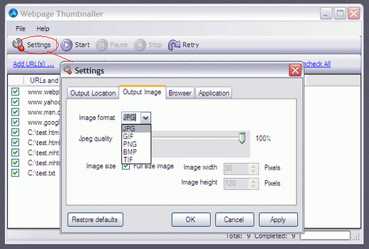

Main Screen

Main screen of the Webpage Thumbnailer, where you can prepare the list of your websites/webpages or local MHTML/HTML files, which you want to convert to images. you can start the conversion process, pause, stop or retry from here.
Main Screen In Action
Working Screen of the Webpage Thumbnailer, where you can see the progress from the right bottom part of the screen.
Add Web Pages URLs

Using this screen, you can add websites/web pages links to convert them to images/thumbnails/screenshots.
Add MHTML and HTML Files

From this screen, you can add your local web page (HTML or MHTML) files for conversion.
Settings Screen > Output Location Tab
Output Location"/>
Settings screen to set the output location, options for output images name, overwrite, open etc.
Settings Screen > Output Image Tab
 Output Image"/>
This screen is for setting the output image format (jpg, gif, png, bmp or tif), jpeg quality, image size.
Settings Screen > Browser Tab
Browser"/>
Using this screen, you can specify browser width and height, disable Scripts, Java or ActiveX, set timeout seconds, delay seconds or force to take screenshot if timeout.
Settings Screen > Application
Application"/>
You can use this option to show or hide system tray icon and hide Webpage Thumbnail when minimized, you can also set the number of websites you want to capture simultaneously.